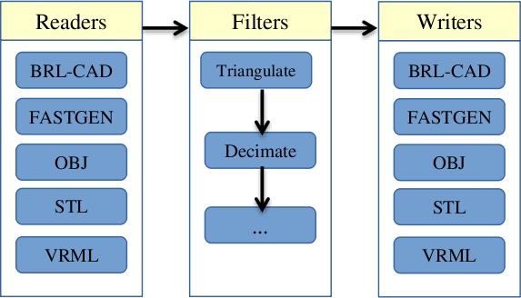
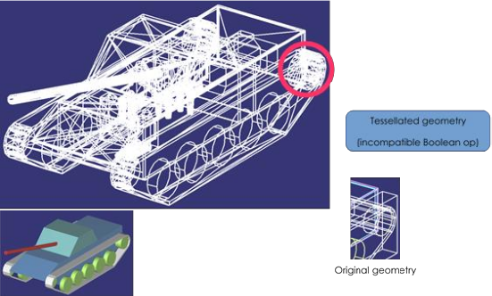
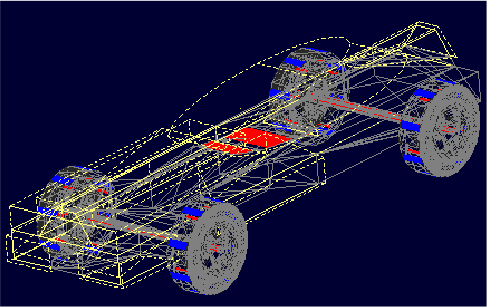

Introduction
The Geometry Conversion Library (GCV or libgcv) provides a unified API for geometry conversion capabilities under a plugin-based architecture.
The GCV public API is declared in C headers located within include/gcv/. The single include/gcv.h header includes the entire GCV public API.
Architecture
The Geometry Conversion Library consists of a stream-based API for geometry conversion and associated operations. Input and output are provided by "reader" and "writer" converters (provided by plugins). Intermediate operations are provided by "filters". Readers and writers are types of filters that provide input and output support for model formats, while basic filters apply transformations to models and geometry.
Geometry is stored in an in-memory BRL-CAD database (struct db_i in include/rt/db_instance.h) during the intermediate steps of conversion. For writer filters, this database is marked read-only and its geometry should not be modified. All names within a BRL-CAD database must be unique.

Building GCV
GCV can be built in a similar manner as other BRL-CAD libraries. After configuring with CMake, building the libgcv target will produce a dynamic library. For Unix-based systems, the procedure should be similar to the following:
$ cd brlcad $ mkdir build $ cd build $ cmake .. $ make libgcv
Plugins can be built under gcv__plugin_name_ targets, or collectively under the gcv_plugins target.
The command-line utility can be built under the gcv target. At this time, the gcv program is not installed automatically; the binary will be placed into build/src/conv/gcv/.
Example: Using GCV in an application
The following code illustrates a basic use of GCV from within an application. Note that there may be multiple filters providing import/export capabilities for a given format; the below code simply selects the first matching filter encountered.
TODO: embedded code
GCV Public API
The public API for interacting with GCV filter plugins is summarized below.
|
Stores the conversion state. Plugins may store messages in the |
|
Initialize a |
|
Frees memory associated with a |
|
Stores characteristics of a filter. |
|
Store generic options applying to all filters. |
|
Initialize a |
|
Returns a pointer to a |
|
Perform a filter operation on a |
The Internal Plugin API
The GCV plugin API is declared in include/gcv/api.h. Plugins provide an externally-visible const struct gcv_plugin defining their filters, which are described by struct gcv_filter.
|
Specifies a unique name for the filter, allowing it to be identified by application code. |
|
Specifies the type of filter. |
|
Optional pointer to a function that allocates and initializes |
|
Optional pointer to a function that frees any opaque pointer allocated by |
|
Pointer to a function which performs the filter operation. The |
As shown in the above table, filters may initialize data structures for processing command-line style option strings via bu_opt. Please refer to include/bu/opt.h for full documentation on the bu_opt API.
Utility Functions
In addition to availability of the rest of the BRL-CAD API, the Geometry Conversion Library provides a number of utility functions that may be useful during plugin development.
|
Performs topological tests for determining whether a given triangular mesh is a manifold, orientable, closed fan satisfying requisite conditions for object solidity. |
|
Produces a triangular mesh tessellation of the object at the given database path using the specified tolerances. Note that if the object at the given path is a combination, a single mesh will be produced from all objects within its tree, and so calling gcv_facetize() on a tree unnecessarily high in the hierarchy and containing many objects is more likely to fail during Boolean evaluation. |
There are also many relevant functions provided by the BRL-CAD API, including a new mesh decimation function.
|
Fast implementation of an iterative mesh decimation algorithm. |
Developing a Minimal Plugin
Basic Code
The following steps will implement a minimal plugin providing a reader filter.
-
Add the following line to
misc/mime_cad.types. This file is used to generateinclude/bu/mime.h:model/foo bar
This will associate the file extension
.barwith a newBU_MIME_MODEL_FOOvalue ofbu_mime_model_t. -
Create the following file at
src/libgcv/plugins/foo/CMakeLists.txt:CMakeLists.txtLIBGCV_ADD_PLUGIN(foo "foo_read.c" "librt;libbu")
-
=== Traversing the Database
foo_read.cTODO: embedded code
BRL-CAD provides the db_walk_tree() function for traversing the database in hierarchical order. You can specify your own visitor callbacks as documented in include/rt/tree.h, or use the region-end functions provided by GCV (include/gcv/util.h) to tessellate geometry at the region level.
|
Apply Boolean evaluation to region-level tessellated meshes using the default NMG Boolean evaluator, replacing each region-level node and its subtree of tessellated leaf meshes with a single BoT structure that is then passed to the specified callback. The |
|
Boolean evaluator roughly based on UnBBoolean’s j3dbool (and associated papers). Does not take a callback. |
|
Experimental variant of |
The following example implements a filter that tessellates all geometry into BoT mesh objects and counts the total number of faces.
TODO: embedded code
Converting Unsupported Entities
Although BRL-CAD supports a wide array of common geometric primitives, you may encounter objects that can’t be directly imported or exported into an analogous entity. In these cases, conversion filters usually tessellate the incompatible geometry (typically during export) or convert it into an approximation or a composite of several other primitives (often during import).

Comparing Geometry
When developing a filter, it is often useful to be able to compare different models during testing. This capability is provided by the gdiff tool. There are two versions of gdiff: the standalone command-line version and the gdiff provided within the MGED interface.
The command-line gdiff quickly produces a textual summary for a two- or three- way diff of several BRL-CAD databases. Documentation for this utility is available under brlman gdiff.
The gdiff command available within the MGED interface provides a different capability. It uses BRL-CAD’s ray tracer to produce a visual display of the differences between two objects within the same database. To compare geometry from separate databases, you can first merge the databases using the dbconcat command from within MGED. See brlman dbconcat for full documentation.
| Usage: | gdiff [OPTION]… obj1 obj2 |
|---|---|
|
Tolerance in millimeters. |
|
Test for differences with raytracing. |
|
Visualize volumes added only by left object. |
|
Visualize volumes common to both objects. |
|
Visualize volumes added only by right object. |
|
Report differences in grazing hits (raytracing mode). |

Creating Unit Tests
BRL-CAD provides a library of standard models that may be used for unit tests, located under $BRLCAD_ROOT/share/db/ (note that these files are generated during the build process). Unit tests can be integrated into the build system using the add_test CMake command.
Example: Extending an Application
The following example will leverage the filter in the above plugin example, tessellation_statistics.c, to implement a function that counts the number of faces in a model after tessellation.
TODO: embedded code
The GCV Frontend
GCV includes a command-line front-end utility, gcv, implemented in src/conv/gcv/gcv.c. Full documentation is available under brlman gcv and gcv —help.
$ gcv --input=a.stl --output=b.fg4
Input file format: BU_MIME_MODEL_STL
Output file format: BU_MIME_MODEL_VND_FASTGEN
Input file path: a.stl
Output file path: b.fg4
Converting Part: all_cpu_cpw6_cw_cpubox_cpubox.a
Using solid name: s.all_cpu_cpw6_cw_cpubox_cpubox.a
Making region (all_cpu_cpw6_cw_cpubox_cpubox.a)
...
$ gcv --input=a.fg4 --output=b.vrml --input-and-output-opts --verbosity=1 --output-only-opts --objects=comp_0001.r
$ gcv --input=a.fg4 --output=b.obj --input-only-opts --colors=a.fg4.colors --output-only-opts --vertex-normals
$ gcv --input=infile.txt --output=outfile.obj --input-format=stl
Conversion Filters
GCV currently contains support for import and export into five model formats, detailed below.
| Format | File Extension |
|---|---|
BRL-CAD |
|
FASTGEN4 |
|
WaveFront Object |
|
StereoLithography |
|
Virtual Reality Modeling Language |
|
Common Conversion Options
The gcv_opts struct stores generic options applying to many filters, detailed below. Not all options may be applicable to or respected by every filter.
|
Print debugging info if set to |
|
Verbosity level. The default, level |
|
Specify the scale factor to be applied during import or export, as units per mm. Default is |
|
Calculational tolerance. Defaults to the RT defaults. If you use a non-default value, you should set the ray tracer tolerance to match it when using the resulting model. |
|
Tessellation tolerance. The default value is: |
|
Specify use of either the default, marching-cubes, or bottess-based tessellation algorithm. |
|
Maximum number of processors to utilize where possible. Default is |
|
Number of objects to convert. If |
|
Names of objects to convert (must have |
|
Name assigned to objects without names. Defaults to " |
|
Debug flag for libbu (see |
|
Debug flag for librt (see |
|
Debug flag for libnmg (see |
static int
apply_filter_with_options(struct gcv_context *context, const struct gcv_filter *filter, const char *target)
{
struct gcv_opts options;
const char *argv[] = { "--colors=colors.dat", "--continue" };
const size_t argc = sizeof(argv) / sizeof(argv[0]);
gcv_opts_default(&options);
options->debug_mode = 1;
return gcv_execute(context, filter, &options, argc, argv, target);
}
FASTGEN4 Reader
|
Path to a file specifying component colors. |
|
Create a MUVES input file containing any CHGCOMP and CBACKING components. |
|
Create a libplot3 plot file of all CTRI and CQUAD elements processed. |
|
Process only a list (" |
FASTGEN4 Writer
At this time, the FASTGEN4 writer plugin does not make use of any filter-specific options.
OBJ Reader
|
Continue processing on nmg-bomb. Conversion will fall back to native BoT mode if a fatal error occurs when using the nmg or BoT-via-nmg modes. |
|
Fuse vertices that are near enough to be considered identical. Can make the solidity detection more reliable, but may significantly increase processing time during the conversion. |
|
Select which OBJ face grouping is used to create BRL-CAD primitives. |
|
Select the conversion mode. |
|
Thickness (mm) used when a BoT is not a closed volume and it’s converted as a plate or plate-nocos BoT. |
|
Ignore the normals defined in the input file when using native BoT conversion mode. |
|
Select the type used for BoTs that aren’t closed volumes. |
|
Creates a plot/overlay ( |
|
Select the BoT orientation mode. |
OBJ Writer
|
Output vertex normals. |
|
Place |
STL Reader
|
Specify that the input file is in binary STL format (the default assumes ASCII). |
|
Specify the starting ident for the regions created. The default is |
|
Specify that the starting ident should remain constant. |
|
Specify the material code that will be assigned to all created regions (the default is |
STL Writer
|
Write output as a binary STL file. The default is ASCII. In the case of ASCII output, the region name is specified on the "solid" line of the STL file. In the case of binary output, all the regions are output as a single STL part. |
|
Specify that the output path should be a directory. Each region converted is written to a separate file. File names are constructed from the full path names of each region (the path from the specified object to the region). Any " |
VRML Reader
At this time, the VRML reader plugin does not make use of any filter-specific options.
VRML Writer
|
BoT dump. Mutually exclusive with |
|
Evaluate all, CSG and BoTs. Mutually exclusive with |
Open Asset Import Library Reader
The Open Asset Import Library (assimp) is an open source library integrated into GCV, capable of loading and converting geometry from 45 3D file-formats.
.3d |
.gltf / .glb (1.0) |
.obj |
.3ds |
.gltf (2.0) |
.off |
.3mf |
.hmp |
.ogex |
.ac |
.ifc |
.ply |
.ac3d |
.lwo |
.pmx |
.acc |
.lws |
.q3o |
.ase |
.lxo |
.q3s |
.b3d |
.md2 |
.raw |
.blend |
.md3 |
.sib |
.bvh |
.md5 |
.smd |
.cms |
.mdc |
.stl |
.cob |
.mdl |
.x |
.dae |
.mesh / .mesh.xml |
.x3d |
.dxf |
.ms3d |
.xgl |
.fbx |
.nff |
.zgl |
|
Specify the starting ident for the regions created. The default is |
|
Specify that the starting ident should remain constant. |
|
Specify the material code that will be assigned to all created regions (the default is |
|
Specify the file format for conversion. By default, this is inferred from the file extension. |
|
Note
|
As the Asset Import library handles many formats, some of which are also handled by other conversion methods, it currently must be explicitly called to invoke. The format itself is then inferred from the files extension. |
$ gcv --input-format=assetimport input_file.ext output_file.ext
Open Asset Import Library Writer
The Open Asset Import Library (assimp) is an open source library integrated into GCV, capable of exporting to 15 different 3D file-formats.
.3ds |
.fbx |
.pbrt |
.3mf |
.glb |
.ply |
.assbin (assetimport binary) |
.gltf |
.stl |
.assxml (assetimport xml) |
.json |
.stp |
.dae |
.obj |
.x3d |
|
Specify the file format for conversion. By default, this is inferred from the file extension. |
|
Note
|
As the Asset Import library handles many formats, some of which are also handled by other conversion methods, it currently must be explicitly called to invoke. The format itself is then inferred from the files extension. |
$ gcv --output-format=assetimport input_file.ext output_file.ext